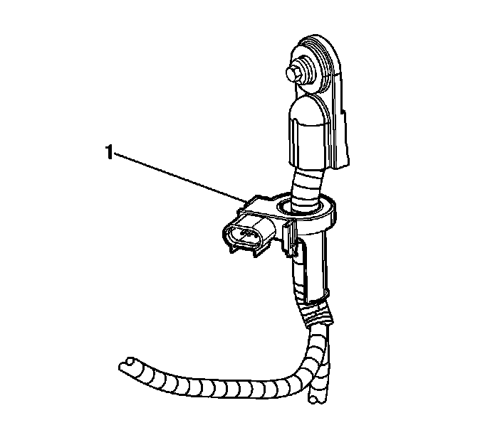

Battery Current Sensor: Service and Repair
Battery Current Sensor Replacement
Removal Procedure

1. Remove the negative battery cable. Refer to Battery Negative Cable Replacement (LH2 (LHD)) (Service and Repair)Battery Negative Cable Replacement (LH2 (RHD)) (Service and Repair)Battery Negative Cable Replacement (LY7 (LHD)) (Service and Repair)Battery Negative Cable Replacement (LY7 (RHD)) (Service and Repair) .
2. Cut the tie straps and electrical tape attaching the battery current sensor to the battery cable.
3. Squeeze the negative battery cable branches together.
Important: Note the position of the battery current sensor prior to removal.
4. Slide the battery current sensor (1) off of the negative battery cable.
Installation Procedure
Important: Ensure that the tape tab is pointing away from the battery prior to installation.
1. Slide the NEW battery current sensor (1) up onto the negative battery cable.
2. Using NEW tie straps and electrical tape, attach the battery current sensor to the negative battery cable.
3. Install the negative battery cable. Refer to Battery Negative Cable Replacement (LH2 (LHD)) (Service and Repair)Battery Negative Cable Replacement (LH2 (RHD)) (Service and Repair)Battery Negative Cable Replacement (LY7 (LHD)) (Service and Repair)Battery Negative Cable Replacement (LY7 (RHD)) (Service and Repair) .